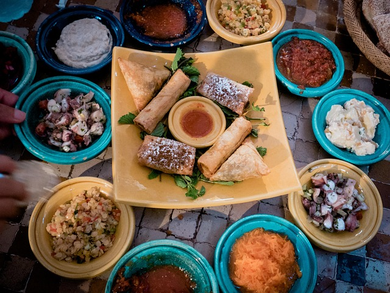

As you wander through the bustling streets of Morocco, the enticing aromas of local dishes fill the air. Moroccan cuisine is a feast for the senses, offering a variety of flavors and textures that delight both young and old.
One of the most iconic dishes is the Tagine, a slow-cooked stew named after the earthenware pot it's cooked in. Tagines can be made with meat, poultry, or vegetables, infused with a blend of spices that create a symphony of flavors.
Another staple is Couscous, often considered the national dish of Morocco. This steamed semolina grain is typically served with a hearty mix of vegetables and tender meat, making it a wholesome and satisfying meal.
For a sweet treat, try Chebakia, a sesame cookie that's fried and coated in honey, commonly enjoyed during festive occasions.
To quench your thirst, nothing beats a glass of refreshing Mint Tea. This sweetened green tea, infused with fresh mint leaves, is a symbol of Moroccan hospitality and is enjoyed throughout the day.